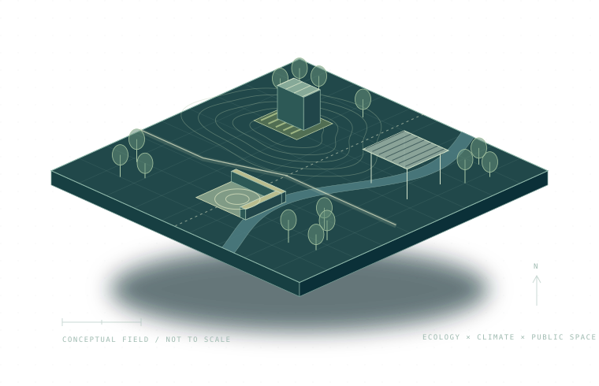

2026 · Complete portfolio
Research, Teaching & Practice
Design investigations, environmental research, and student work brought together in one volume.
Landscape architecture / Research + Teaching + Practice
Landscape Researcher
& Educator.
Exploring how ecology, climate, and everyday life shape the landscapes we design.
Assistant Professor · School of Architecture
University of Nevada, Las Vegas

Plants, contaminated soils, and the design of responsive landscapes.
Select a numbered site to explore a project ↗01 / WORK
Studies in landscape, climate, and public life. A selection of research, design, and work from the studio.
Design investigations, environmental research, and student work brought together in one volume.
02 / RESEARCH
Street-level greenery, urban heat, and park cooling access studied through geospatial and human-mobility data, from the Las Vegas Strip to Detroit, Austin, and Phoenix.
Phytoremediation of brownfield soils, algae-bloom and freshwater ecosystem recovery, and plant-based indoor air quality — restoration carried through into design practice.
Social media, smartphone, and streetlight-sensor data used to evaluate how people actually use urban parks — visitation rhythms, nighttime use, perceived affordances.
How technology is adopted, taught, and disseminated within landscape architecture — and the gap between academic knowledge and professional practice.
03 / WRITING
Landscape and Urban Planning
Building and Environment
Science of The Total Environment
Organized by research focus, most recent first. * = Corresponding Author
01Li, X., Wen, Y., Yang, Q., & Shen, X.* (2026). How Localized Differences in Street Greenery Conditions Are Associated with Urban Public Space Use Patterns: Evidence from the Las Vegas Strip. Land Use Policy, 170, 108181.
02Shen, X., Kong, J., & Shen, X.* (2026). Measuring the Spatiotemporal Heterogeneity of Commercial Vitality Around Greenfield Semiconductor Facilities: A Human Mobility Perspective. ISPRS International Journal of Geo-Information, 15(7), 283.
03Li, X., Chen, Y., Wen, Y., Yang, Q., & Shen, X.* (2026). From Green Space to Park-Based Cooling Potential: Performance-Weighted Walkable Access to Urban Park Cooling in Detroit. Sustainable Cities and Society, 107603.
04Shen, X., Wang, S., Kong, J., & Shao, Z. (2026). Urban Vitality Under Extreme Heat and Energy Infrastructure Expansion: Evidence from Austin and Phoenix, USA. Building and Environment, 114871.
05Zhu, Z., Hu, S., Shen, X., & Shen, X.* (2026). Built Environment, Safety, and Urban Economic Contexts in Shaping Urban Park Visitation for Sustainable Urban Development: A Multi-Method Analysis of Las Vegas. Sustainability, 18(10), 5073.
06Guo, Y., Wang, L., Kong, J., Wei, M., Ye, X., Hu, S., et al., & Shen, X. (2026). Beyond Proximity: Optimizing Waterfront Design for Thermal Comfort Through Microclimatic Insights and Generative Algorithms. Building and Environment, 114415.
07Shen, X., Guo, Y., Yang, Q., Cheng, W., Chen, M., Gao, X., Cheng, S., & Wang, L. (2025). Assessing Climate Adaptation and Ecological Resilience in Urban Green Space Renewal: A Case of Alamo Square in San Francisco, USA. Ecological Indicators, 114206.
08Guo, Y., Shen, X., Qin, Y., Che, S., Wei, M., & Wang, L. (2025). Mitigating and Adapting to Extreme Climate: Developing a Novel Assessment Model for Unexplained Hot-Humid Exposure in Metropolitan Areas. Sustainable Cities and Society, 106432.
09Shen, X., Chen, M., Li, X., Gao, S., Yang, Q., Wen, Y., & Sun, Q. (2024). Advancing Climate Resilience Through a Geo-Design Framework: Strengthening Urban and Community Forestry for Sustainable Environmental Design. Journal of Forestry Research, 35, 117.
10Chen, M., Cai, Y., Guo, S., Sun, R., Song, Y., & Shen, X.* (2024). Evaluating Implied Urban Nature Vitality in San Francisco: An Interdisciplinary Approach Combining Census Data, Street View Images, and Social Media Analysis. Urban Forestry & Urban Greening, 95, 128289.
11Shen, X., Chen, M., Ge, M., & Padua, M. G. (2022). Examining the Conceptual Model of Potential Urban Development Patch (PUDP), VOCs, and Food Culture in Urban Ecology: A Case in Chengdu, China. Atmosphere, 13(9).
12Shen, X., Sun, Q., Mosey, G., Cai, Y., & Cheng, W. (2025). Optimizing Indoor Air Quality: The Role of Potted Plants and Machine Learning Models in Reducing VOCs. Urban Climate, 62, 102497.
13Shen, X., Sun, Q., Mosey, G., & Ge, M. (2024). Benchmark of Plant-Based VOCs Control Effect for Indoor Air Quality: A Green Wall Case in Smith Campus at Harvard University. Science of The Total Environment, 906, 166269.
14Shen, X. W., Zeng, B., Ge, M. T., & Wang, J. X. (2024). Analysis of Odor-Active Compounds from Pinus massoniana as Materials in Landscape Design Based on GC-MS-O Technology. Scientia Silvae Sinicae, 60(9), 159–169.
15Shen, X., Ge, M., Handel, S. N., Wang, W., Jin, Z., & Kirkwood, N. G. (2023). Advancing Environmental Design with Phytoremediation of Brownfield Soils Using Spontaneous Invasive Plants. Science of The Total Environment, 883, 163635.
16Shen, X., Chen, J., Yang, Q., & Ge, M. (2023). Design with Algae Bloom: An Ecological Restoration Design Approach in an Urban Landscape. Ecological Restoration, 41(2–3), 78–83.
17Chu, J., Tang, X., & Shen, X.* (2022). A Design Framework of Exploration, Segmentation, Navigation, and Instruction (ESNI) for the Lifecycle of Intelligent Mobile Agents as a Method for Mapping an Unknown Built Environment. Sensors, 22(17), 6615.
18Shen, X., Chen, D., & Padua, M. (2022). Restoring, Remaking and Greening Freshwater Ecosystems — Ecological Notes from a Review of Projects in China. Ecological Restoration, 40(3), 172–178.
19Shen, X., Handel, S., Kirkwood, N., Huang, Y., & Padua, M. (2022). Locating the Responsive Plants for Landscape Recovery: A Toolkit for Designers and Planners. Ecological Restoration, 40(1), 33–35.
20Shen, X., Kong, J., Shen, X., & Dai, F. (2027). Parks as behavioral climate adaptation infrastructure: mechanisms and limits under extreme heat. Landscape and Urban Planning, 278, 105797.
21Shen, X., Linquist, M., Yang, Q. (2026). A Multimodal Framework for Linking Perceived Affordances, Emotions, and Behavioral Rhythms in Urban Parks. Landscape and Urban Planning, 278, 105817.
22Yang, Q., Lindquist, M., & Shen, X*. (2026). Perceived Affordances, Affective Valence, and Visit Behaviors in Urban Parks: Multimodal Evidence from Detroit. Journal of Environmental Psychology, 103228.
23Cheng, S., Guo, S., Yang, Q., & Shen, X.* (2026). Beyond Brightness: How Lighting Configuration and Urban Context Shape Nighttime Park Use. Sustainable Cities and Society, 107435.
24Shen, X., Kong, J., Song, Y., Wang, X., & Mosey, G. (2025). Optimizing the Environmental Design and Management of Public Green Spaces: Urban Infrastructure and Long-Term User Experience with a Focus on Streetlight Density in Las Vegas. Information Fusion, 18, 102914.
25Yang, Q., Gao, X., Yang, S., & Shen, X.* (2025). Temporal and Spatial Dynamics of Peak-Time Urban Park Visitation: Investigating Influencing Factors Across Scales in Post-Pandemic Detroit. Urban Forestry & Urban Greening, 112, 128871.
26Yang, Q., Yang, S., Zhang, B., & Shen, X.* (2025). Integrating Crowdsourced Data in the Built Environment Studies: A Systematic Review. Journal of Environmental Management, 373, 123936.
27Liu, J., Cai, Y., & Shen, X.* (2025). Integrating Machine Learning, SHAP Interpretability, and Deep Learning Approaches in the Study of Environmental and Economic Factors: A Case Study of Residential Segregation in Las Vegas. Land, 14(5), 1–29.
28Zhao, R., Yang, S., & Shen, X. (2025). Unraveling the Correlation between Urban Park Features and Visit Durations: A Longitudinal Smartphone Behavior Survey in Austin. Urban Forestry & Urban Greening, 105, 128706.
29Zhang, B., Song, Y., Liu, D., Zeng, Z., Guo, S., Yang, Q., et al., & Shen, X.* (2023). Descriptive and Network Post-Occupancy Evaluation of the Urban Public Space through Social Media: A Case Study of Bryant Park, NY. Land, 12(7), 1403.
30Shen, X., Huang, Y., Zawarus, P., Kong, J., Yang, Q., & Wang, L. (2024). Explore a Sustainable Development Education (ESD) Framework of Planting and Environmental Design Based on the Barriers of Knowledge Dissemination between Academia and Practice. Journal of Asian Architecture and Building Engineering, 1–16.
31Shen, X., Padua, M. G., & Kirkwood, N. G. (2024). Transformative Impact of Technology in Landscape Architecture on Landscape Research: Trends, Concepts and Roles. Land, 13(5), 630.
32Shen, X. (2023). Identifying the Role of Technology within the Discipline of 21st Century Landscape Architecture. The Design Journal, 26(2), 351–361.
33Shen, X., Kong, J., Padua, M. G., & Kirkwood, N. G. (2024). 21st Century Technology in Landscape Architecture and Its Significance within the Discipline of Landscape Architecture. Chinese Landscape Architecture 中国园林, 2023(01), 31–40.
34Zhang, Y., Ge, M., Dong, B., & Shen, X.* (2022). The Influence of Human-Computer Interaction on Landscape Perception in the Digital Context. Landscape Architecture 风景园林, 29(9), 48–54.
Shen, X. (2024). Magical Foodscape: A Guidebook for Re-planning the Cities Based on Culture, Food and the Built Environment. Pensoft Advanced Books, 1, e129204.
Shen, X., & Lee, D. (2017). Autopsy Disaster Model. Landscape Architecture Magazine, 107(10), 86.
Shen, X., Zhang, C., & Chen, J. (2018). Bloom! A Dynamic Landscape Biological System. Landscape Architecture Magazine, 108(10), 80.
Shen, X., Jiang, S., & Chen, J. (2018). Korea Remade: A Guide to the Reuse of the DMZ and Hinterlands towards Unification. Landscape Architecture Magazine, 108(10), 56–57.
04 / ABOUT
RESEARCH + DESIGN + EDUCATION
Dr. Shen is a Tenure-Track Assistant Professor of Landscape Architecture in UNLV's School of Architecture. His work sits between design theory and applied environmental science — studying how new technology enters landscape architecture practice and education, and how it can be turned back toward ecological restoration, climate resilience, and the everyday performance of public open space.
He serves as Associate Editor of The Design Journal (Taylor & Francis) and Journal of Public Health Research (Sage), and as an Editorial Board Member of Land (MDPI). He is a Certified Ecologist with the Ecological Society of America.
Before academia, he practiced at Michael Van Valkenburgh Associates, Reed Hilderbrand, SWA Group, EDSA, Office of James Burnett, and Design Workshop, and served as Design Director at GN International Design in Shanghai — a practice background that keeps his research tied to buildable, site-specific work.
05 / TEACHING
University of Nevada, Las Vegas — School of Architecture · Committee Member, Lecture Series
Clemson University
Kent State University — Thesis Review, Master of Landscape Architecture
06 / PRACTICE
Shanghai, China — Qinhu Lake Commercial District (Wuxi); Green City Cambodia; Xuxiake Cultural District Planning (Wuxi)
Boston, MA — Santa Clara City Center Planning; Grand Avenue Plan (Los Angeles); Westfield Mall Commercial District (Mexico City)
Shanghai, China — Chengdu Longquan Mountain Planning; Cadence Community Park (Las Vegas); Wenchang Business Street (Hainan)
Cambridge, MA — Lower Don River (Toronto); Northpoint Park (Cambridge); Harvard University Lowell House
Cambridge, MA — The Breakers Master Plan (Newport); Peace Corps Competition (Washington, D.C.); LSU Master Plan (Baton Rouge)
Houston, TX — Buffalo Bayou Master Plan; LSU Lake Master Plan (Baton Rouge)
Fort Lauderdale, FL — projects in Beijing, Hangzhou, Riviera Maya, Panama, and Nicaragua
07 / HONORS
08 / SERVICE
Application of Local Spontaneous Plants into Brownfield Remediation in Shanghai Area
Harnessing Big Data to Optimize Green Infrastructure Resource Allocation for Improving Health Outcomes and Climate Resilience
Eco-Immigrant
Guest Editor, Land (SSCI) — “Computational Design and Planning for Socio-Environmental Sustainability of Landscapes and Communities,” 2024–2025
Guest Editor, Land (SSCI) — “Landscape Design, Evaluation and Management Created by Novel Technologies,” 2023–2024
Guest Editor, Atmosphere (SCI) — “The Sustainable Technologies in Landscape and Urban Planning Response to Climate Change,” 2022–2023
Guest Editor, City, Territory and Architecture (Springer) — “Depth and Complexity in Applying Big Data to Understand Interactions within Built Environment,” 2022–2023
Journal Reviewer — Environmental Monitoring and Assessment, Building and Environment, Ecological Indicators, Journal of Asian Architecture and Building Engineering, Sustainability, BioResources
“Art, Science and Future Landscape Architecture”
“History, Theory, Design in 21st Century Landscape Architecture”
“Environmental Design and Ecological Landscape Architecture”
“Development Trend of Landscape Architecture in the 21st Century”
“Locating the Responsive Plants for Landscape Recovery: A Toolkit for Designers and Planners”
“Bloom! A Dynamic Landscape Biological System”
2023 — American Society of Landscape Architecture Conference. Panel: “Recent Progress in Big Data and Landscape Architecture: Applications through Crowd-Sourced Information.”
2023 — International Conference on Pollution Control & Sustainable Environment (ICPCSE-23). Oral: “Advancing Environmental Design with Phytoremediation of Brownfield Soils Using Spontaneous Invasive Plants.”
2023 — International Federation of Landscape Architects (IFLA) Conference. Oral: “Examine an Intelligence Education Framework of Landscape Architecture (EFLA).”
2023 — European Council of Landscape Architecture Schools (ECLAS) Conference. Oral: “Examine an Intelligence Education Framework of Landscape Architecture (EFLA).”
2023 — International Conference on Data Science, AI and Analytics (ICDSAIA-23). Oral: “Post-Occupancy Evaluation of the Urban Public Space through Social Media: A Case Study of Bryant Park, NY.”
2023 — Council of Educators in Landscape Architecture (CELA) Conference. Oral: “Conceptualization of Technology in Landscape Architecture (TLA) for the 21st Century.”
2022 — Council of Educators in Landscape Architecture (CELA) Conference. Oral: “Themes in Digital Landscape Architecture: Techniques or Technologies?”
2018 — American Society of Landscape Architecture Conference. Poster: “Bloom! A Dynamic Landscape Biological System.”
2018 — American Society of Landscape Architecture Conference. Poster: “Korea Remade: A Guide to the Reuse of the DMZ and Hinterlands towards Unification.”
2017 — American Society of Landscape Architecture Conference. Poster: “Autopsy Disaster Model.”
09 / EDUCATION
Clemson University
Harvard University, Graduate School of Design
Louisiana State University
10 / CONTACT